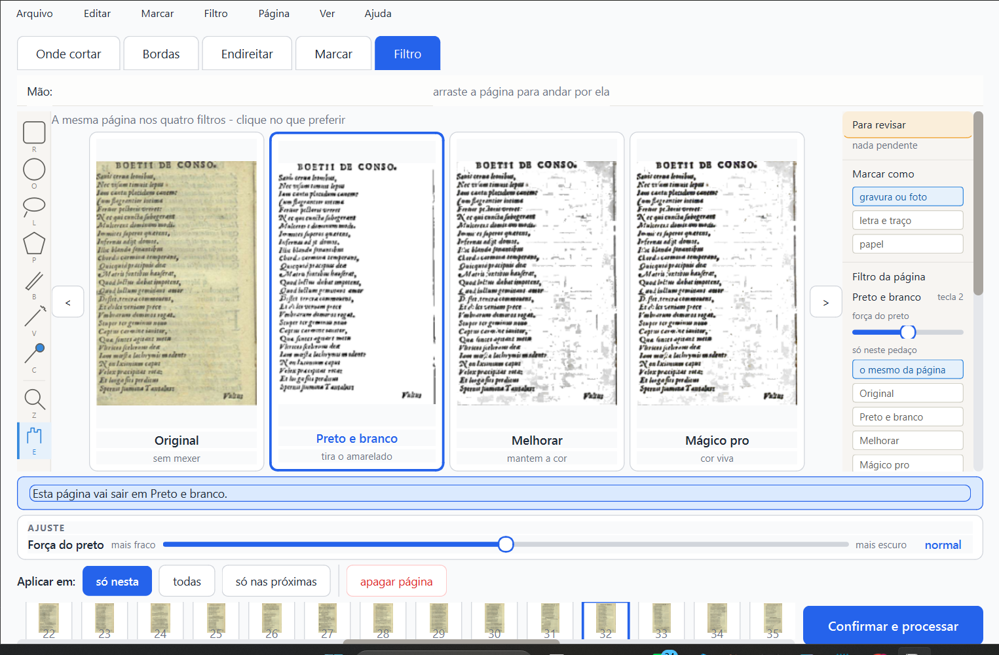
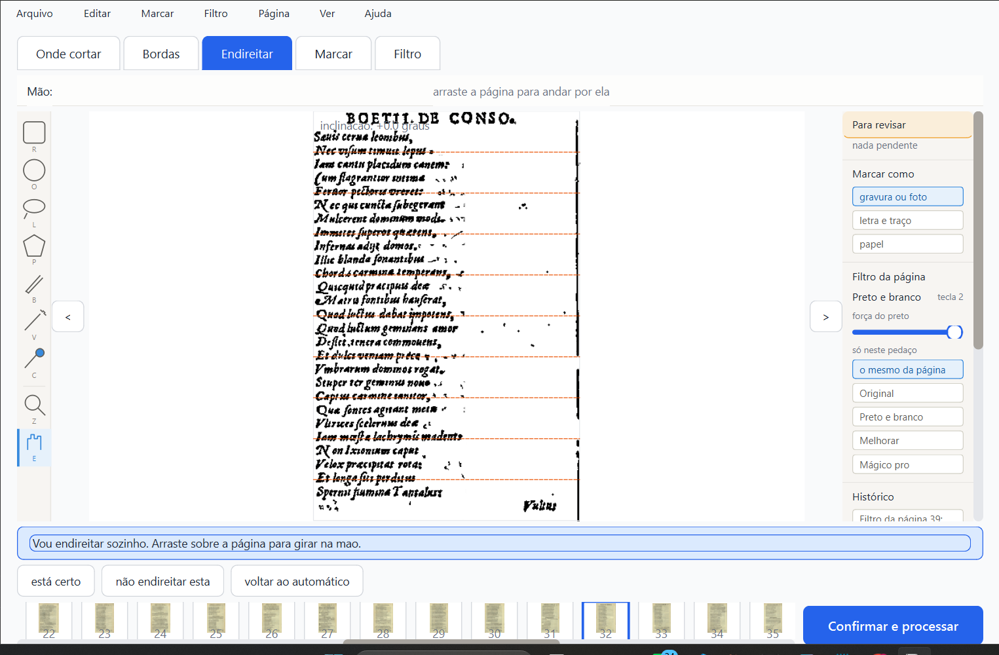

Boécio — primeira rodada de teste (15/09/2026)
Livro: Sobre a Consolação da Filosofia - Severino Boécio (scan ruim, baixa
resolução). Testado ao vivo, pilotando o programa de verdade. Nada foi processado/exportado
— só conferência visual.
1. Os quatro filtros, mesma página (32)

O que olhar: o fundo ficou branco de verdade nos três filtros
processados (Preto e branco, Melhorar, Mágico pro)? As letras continuam legíveis?
Ressalva minha: reparei pontinhos pretos espalhados nas margens
do Preto e branco/Melhorar/Mágico pro (mais visível nas bordas da folha) — pode ser
textura do papel envelhecido sendo lida como tinta. Não tenho certeza se isso
incomoda no resultado final; queria sua opinião antes de decidir se vale investigar.
Ficou bom, ou algum dos quatro te incomoda?
2. Endireitar — mesma página, com o filtro Preto e branco já aplicado

O que olhar: as linhas laranja tracejadas mostram onde o programa
"pensa" que está a linha de texto — se estiverem inclinadas em relação ao texto de
verdade, o ângulo detectado (mostrado no canto, "inclinação: +0,0 graus" nesta página)
está errado.
Ressalva minha, esta sim mais concreta: tem uma faixa
preta vertical na borda direita da página (bem visível, desce quase até o
fim). Parece fundo de scanner não cortado — o mesmo tipo de defeito já documentado
para outro livro, só que do lado esquerdo lá. Aqui está do lado direito.
Essa faixa preta te incomoda? Isso deveria ter sido cortado pela
aba "Bordas" antes de chegar aqui, ou o corte automático está errando nesta página
específica?
O que eu NÃO consegui confirmar ainda
A inclinação automática (endireitar) mostrou 0,0° em duas páginas diferentes que
testei — não achei ainda a página especificamente torta que está anotada no
PEDIDOS.md ("também tem página torta"). Preciso navegar mais o livro
para achar essa página exata antes de testar o endireitamento de verdade.
Próximo passo, se você aprovar seguir
Continuar percorrendo o livro pra achar a página torta específica, testar a aba
"Bordas" pra ver se a faixa preta é cortada automaticamente ou não, e testar a
"mancha do verso" (ainda não achei uma página com esse defeito visível neste livro
especificamente — pode ser mais forte em outro dos 3 livros escolhidos).